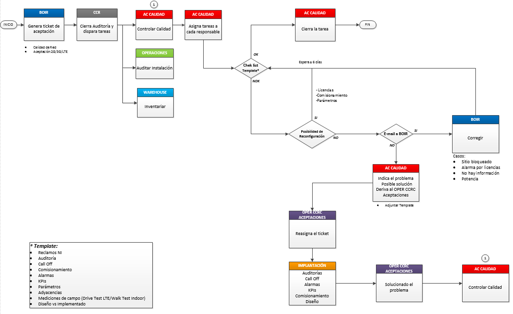

INDOOR Y NUEVAS TECNOLOGÍAS¶
Optimizar las soluciones Indoor y nuevas tecnologías de red de acceso, analizando el impacto de la implementación de cada una y corroborar que se cumpla con los estándares de calidad durante todo el proceso.
1. DOCUMENTACIÓN DAS¶
- Introducción DAS : Entrenamiento básico de DAS: arquitectura, como funciona, modelos de HW, especificaciones técnicas, etc. Ver Link: Training_CLAR_AR
- Troubleshooting DAS : Contiene un listado sobre principales alarmas que reportan los sistemas DAS, sus posibles causas y soluciones. Ver Link: Troubleshooting_DAS
- Sistema de Gestión DAS COMBA: Incluye principios de funcionamiento del CMS que es el sistema de gestión de los DAS Comba (Información general, Estructura IP, de HW y Rutinas de Mantenimiento).Ver Link : Argentina_CMS_Training_ESP
- Integracion en sitio: Explicación para conectarse localmente al DAS, a través del OMT (integración de un sitio nuevo, configuración, parametrización, etc)
- POR GPRS Ver Link: integracion_desde_OMT_DAS
- POR ETH Ver link: DAS_v6
1.2. COMBA¶
1.3. COMMSCOPE¶
- · Presentación de producto ION-U/ ION-E.
- Ver link ION_U_ION_E_Product_Overview_AUG_2016
- · Introducción al gestor del DAS Aimos.
- Ver link AIMOS_V2
2. FEMTO CELL¶
CONSIDERACIONES GENERALES
Debido a que las herramientas necesarias para la gestión de FEMTO son varias y requieren distintas versiones de JAVA (que muchas veces no son compatibles con el resto de las herramientas que utilizamos), se instalaron todas en el Servidor SGD4. Por esto antes de comenzar con la gestión de las FC, se deben solicitar los accesos correspondientes. Estos usuarios se solicitan vía Mail a Emiliano Flores / Tomas Ferreyra:
- SGD4
- Acceso al WMS (este mismo se utilizará para ingresar al Putty)
- Acceso de escritura y lectura al SFTP 10.105.109.28
- Acceso al HDM
La configuración de toda la red ALU se baja diariamente en un archivo (Snapshot) que es el equivalente a un “Dump” desde el Netact y se sube al servidor SFTP. Este archivo se maneja con el WPS que es el SW de gestión de ALU (Equivalente al CM Editor del Netact). Toda la información de las distintas FEMTOs, así como los Profiles que son sets de parámetros que se agrupan dentro de una categoría:
- Hardware Profile: agrupa los parámetros de potencia (CPICH, max power limit, etc)
- Location Profile: agrupa parámetros de RF (UARFCN, frequency BAND, etc)
- Profile: agrupa parámetros de HO (QRxLevmin, QQualmin, etc)
Al momento de revisar una FEMTO se debe tener el último Snapshot para tener la configuración actualizada.
REVISAR CONFIGURACION DE FEMTO
- Conectarse al SFTP 10.105.109.28 a través de un gestor como FileZilla_setup. El usuario y password se gestiona con Emiliano Flores o Tomás Ferreyra (es el mismo que se utiliza para WMS, primero se debe ingresar al WMS, en el primer ingreso pide cambiar la clave y una vez que este usuario este generado y ya se haya ingresado al WMS, se puede utilizar en el FTP)
- Ir al raíz e ingresar en la ruta /opt/nortel/data/cmXML/scheduledExport y buscar el último snapshot del día “UTRAN-SNAP20170116xxxxxx.xml” y guardarlo localmente

- Ingresar al WPS desde el SGD4 https://sgd04.oss.ar.telmex/sgd con usuario y password de red.
- Abrir el snapshot File-> Open->Snapshot

- Dentro de FemtoCluster/390@default se encuentran las Femtos de Argentina y se dividen en 2 grupos Femto/xx y FemtoGroup/xx, según sean Home Cell o Metro Cell. Si se conoce el Cell id se busca en Filter On por texto Femto/cellid o FemtoGroup/cellid:

Si no se conoce el Cell id y se tiene el cell name, seleccionamos todas las Femtos y los Femto Groups y vamos a la pestaña Tabular Editor y en la columna bSRName filtramos por el nombre de la FC.

- Para revisar los profiles asignados a cada FEMTO, nos posicionamos en la FC, en la pestaña Object Editor y hacemos click en la flecha del profile para ver los parámetros del mismo:

La versión que está en vigencia es la 4.1.14.2 por lo que de existir más de un profile, se debe tener en cuenta el 14_02_00

(Los parámetros más importantes del Profile, Hardware Profile y Location Profile se encuentran dentro de Lcell)
IMPORTANTE: LOS PARAMETROS AGRUPADOS EN CADA PROFILE SE APLICAN A MAS DE UNA FC POR LO QUE SI SE QUIERE CAMBIAR ALGUN VALOR SE DEBE GENERAR UN NUEVO PROFILE PRIMERO Y LUEGO ASIGNARLO A LA FC
REALIZAR CAMBIOS EN FEMTO
- Para realizar un cambio de parámetros, nos posicionamos en el valor del mismo, hacemos doble click y ponemos el nuevo valor.
- Para realizar un cambio de Profile, hacemos doble click y se habilita el listado de los distintos Profiles existentes (se deben revisar los parámetros que tiene cada uno de los Profiles de antemano para saber cuál es el nombre del que vamos a asignar)
- Luego se deben guardar los cambios en una Workorder. Para esto, una vez que realizamos los cambios vamos a la pestaña Workorder; hacemos click derecho sobre new workorder y seleccionamos la opción Save workorder On local file system. (Se recomienda que el nombre del archivo tenga la acción que se llevará a cabo en esta WO y la celda en la que se realizará el cambio, por ej: ChangeLocationProfile_FBA509)

- La WO consta de 2 archivos XXXXX-default.xwo y XXXXX -default_reverse.xwo. El primero contiene los cambios propiamente dichos y el segundo “deshace” estos cambios, por lo que es importante subir ambos archivos .xwo al servidor para ejecutarlos con el WMS ya que si fallaran los cambios se puede volver atrás ejecutando el –default_reverse.xwo. La ruta en donde deben subirse los archivos es Opt/Data/Nortel/CM XML/
EJECUTAR UNA WO EN EL WMS
- Ingresar al WMS a través del SGD https://sgd04.oss.ar.telmex/sgd con usuario y pass de red en el primer logueo para acceder a la máquina virtual y luego para acceder al ALU 9353 WMS Femto con el usuario de WMS. IMPORTANTE: si solicita actualizar la versión de Java presionar la opción “Mas tarde”.
2. Ingresar a Configuration -> Session Manager y Create new session, aqui también es aconsejable que el nombre de la sesión lleve el nombre de la celda a modificar y que tipo de cambio se va a ejecutar. Una vez creado el nombre, seleccionamos la WO, presionamos Add to list y luego Next. En la siguiente ventana, click en Launch. IMPORTANTE: una vez que terminó de correr la WO, se debe cerrar la sesión en el listado de Session Tasks -> Terminate session.
DESCARGAR UN SNAPSHOT ACTUAL
El Snapshot con la configuración de toda la red de ALU se puede descargar manualmente, para esto, en el WMS, vamos a Configuration -> CM XML -> Export Network. Seleccionamos UTRAN y tildamos la opción Compressed para que genere un .zip. En Directory dejamos la ruta que figura por defecto /cmXML/manualSnapshot; cargamos un nombre en File y luego click en Export now. El archivo .zip se guardará dentro del servidor de ALU por lo que hay que volver a conectarse por Filezilla al 10.105.109.28 Opt/Data/Nortel/CM XML/.
CONECTARSE A UNA FEMTO
- A través de Putty conectarse al servidor 10.105.109.28 (SSH, puerto 22). El usuario y password para ingresar es el mismo que se utiliza para el WMS. Tipear bsrsorted |grep FXXXX. Este comando nos mostrará las IP que tiene asignado para el túnel cada una de las FC. Copiar los últimos 2 octetos de la IP de la FC a la que nos vamos a conectar y tipear femto14 xxx.xxx
- Una vez conectado a la FC, tipeamos console y luego menu. A continuación aparece un listado de comandos que se pueden consultar, ej.: 13) Macro Neighbour Menu y luego 1) Dislplay Internal Handover Statistics (BRRM), estos 2 comandos nos muestran las celdas macro que la FC está sniffeando con su HO attempts y HO successes
ENCENDER O APAGAR EL RADIO DE UNA FEMTO
- A través del SGD ingresamos al HDM; https://sgd04.oss.ar.telmex/sgd con usuario y pass de red en el primer logueo para acceder a la máquina virtual y luego para acceder al ALU HDM Femto con el usuario de HDM. IMPORTANTE: si solicita actualizar la versión de Java presionar la opción “Mas tarde”. El usuario y pass para el HDM también debe solicitarse a Emiliano Flores o a Tomas Ferreyra.

- Vamos a la primera opción de Devices Manage Devices. Para buscar una FC seleccionamos en Search Profile la opción Find Small Cell Devices By Service Tag, en Service Tag Name escribimos cellid y en Service Tag Value ponemos la FC que queremos (si es un grupo de celdas no le ponemos el sector A, B, etc)

- Clickeamos el botón Manage y en Queued Functions seleccionamos la pestaña Queue Action, luego en Action se encuentra un listado de comandos como por ejemplo activar o desactivar el radio. Elegimos y clickeamos el botón Queue.